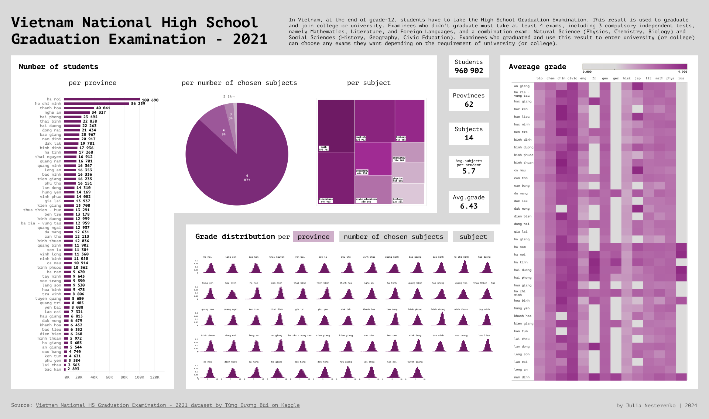
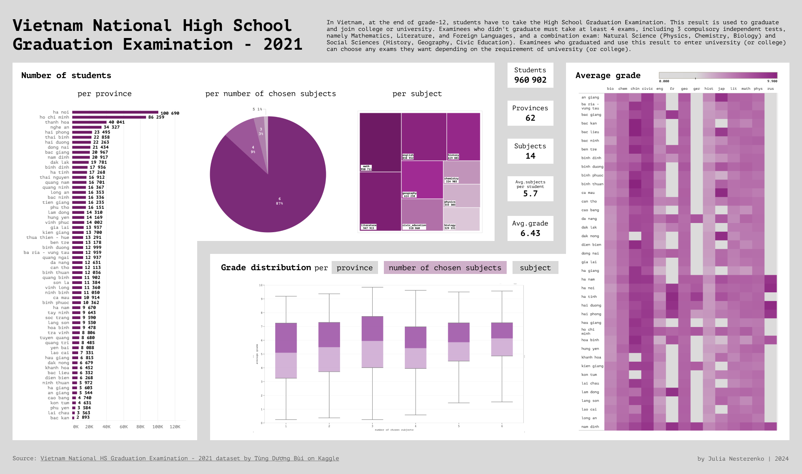
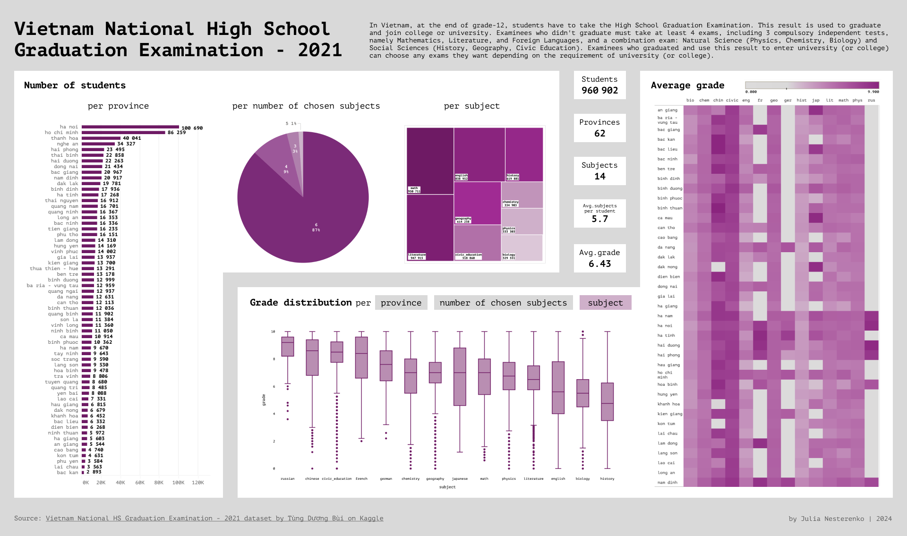
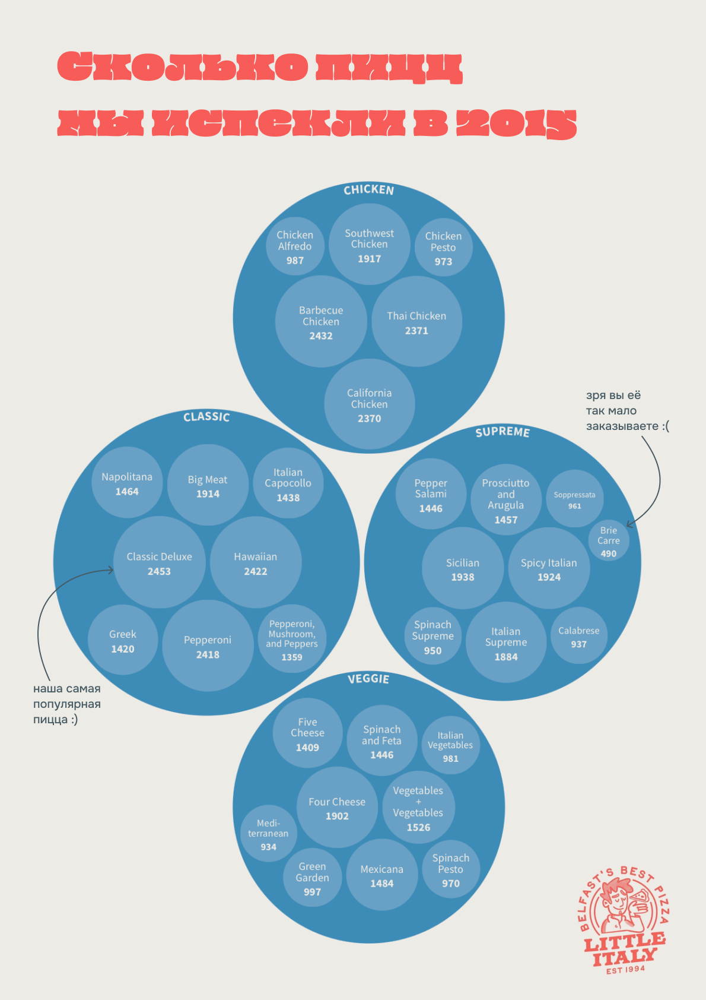
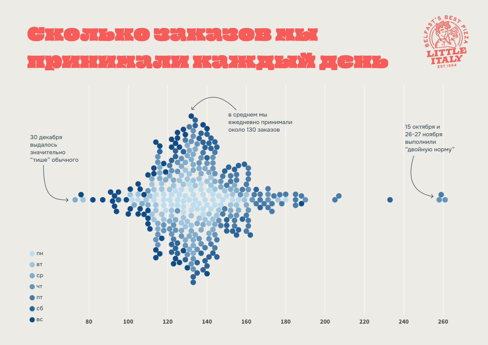

Highlights from the 7th semester
With the second-to-last semester of my bachelor studies in the Intelligent Systems in Humanities program at ITMO University coming to end, I wanted to share vizuals I produced for a couple of course assignments over this term. Really enjoyed exploring applications of different types of visualizations across a wide range of domains.
pt.1
Subject: Educational AnalyticsTask: Develop a blueprint for a dashboard based on a given education-themed dataset.
Constraints: The dashboard should include charts created in Python, Tableau, Power BI and Excel. At least 2 different chart types must be produced with each tool.
Data: Vietnam National HS Graduation Examination - 2021 (high school exam results).
Result:
The idea was to include toggle butttons, hence multiple pictures for each state.
  
pt.2
Subject: Creative Technologies in DataTask: Develop two infographics based on any dataset of choice.
Constraints: Data should be related to the area of business and economics (e.g. financial statistics, sales, performance metrics). Language – Russian.
Data: Pizza Restaurant Sales (1 year of transactions in an imaginary pizzeria).
Tools: Python (data preprocessing), Floursih (charts), Figma (poster design).
Result:
  1 – pizzas sold by kind. 2 – number of daily orders.